- trending views
- MEMBUKA GALANGAN DANA
- +880166 253 232


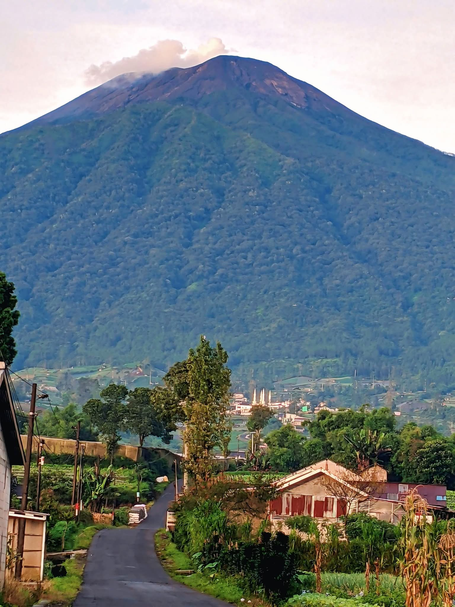
by BBC News Indonesia - 13 jan, 2026

by BBC News Indonesia - 20 nov, 2025

antuan tersebut diserahkan langsung oleh Anggota Komisi VIII DPR RI, Nanang Samodra Kusuma Abdurrahim, bersama Direktur Kesiapsiagaan BNPB Pangarso Suryotomo, kepada Pemerintah Daerah, Minggu (08/02) siang, di Kantor BPBD Pacitan.
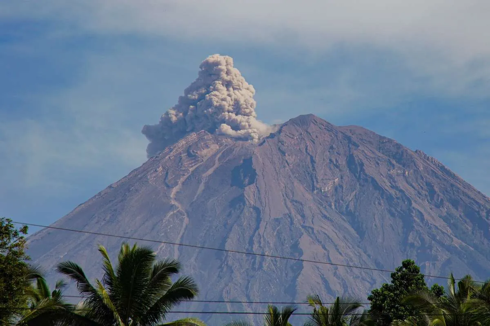
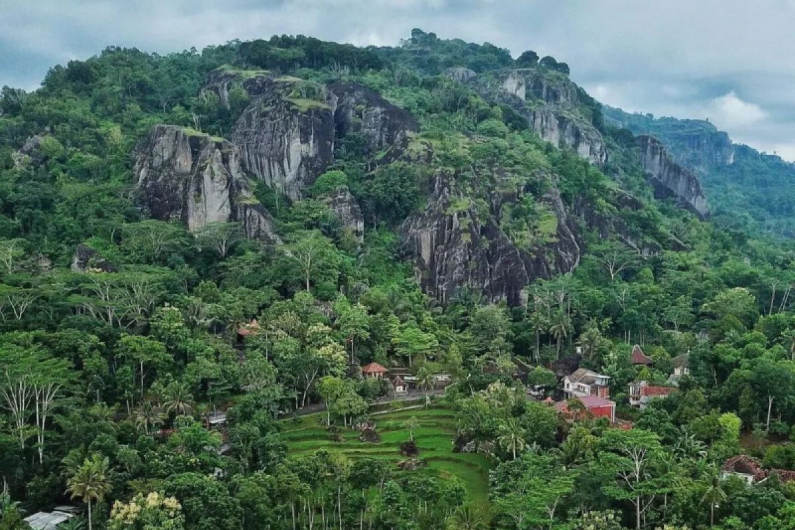
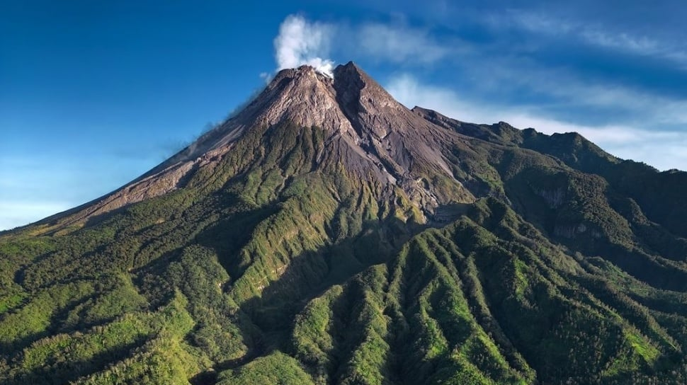

niversitas Indonesia (UI) melalui gerakan UI Peduli kembali menggalang solidaritas publik untuk membantu warga yang terdampak bencana besar di Jawa Timur dan Sumatera. Dua peristiwa yang terjadi berdekatan ini memukul ribuan keluarga yang kini membutuhkan dukungan logistik dan kemanusiaan.

24 jan, 2026
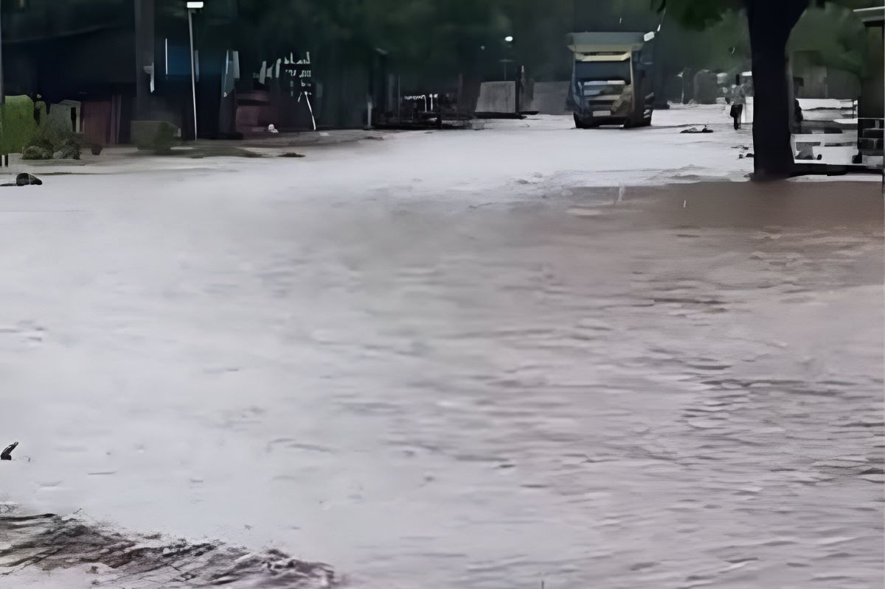
09 Feb, 2026

08 Feb, 2026

Tim Dewan Pimpinan Wilayah (DPW) Gerakan Rakyat Jawa Timur melakukan survei ke lokasi bencana erupsi Gunung Semeru di Kabupaten Lumajang. Ormas dengan tokoh inspiratif Anies Rasyid Baswedan ini berancang-ancang membuka posko dan dapur umum di wilayah yang terdampak dari bencana.

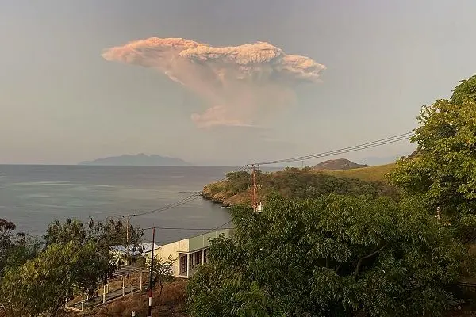
17 jun, 2025
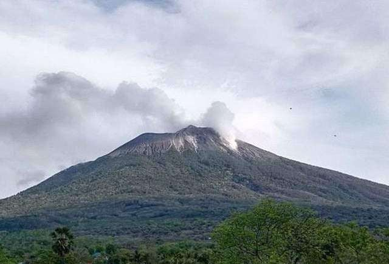
20 jan, 2026

20 jan, 2026

Hujan dan badai di tengah perjalanan panjang dari Pelabuhan Muara, Padang ke Mentawai sempat menghadang bantuan World Vision Indonesia (WVI) kepada pengungsi di Sikakap.
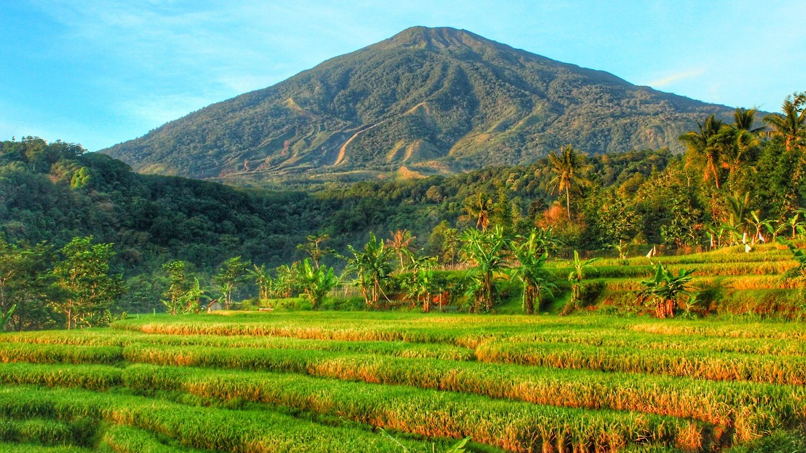
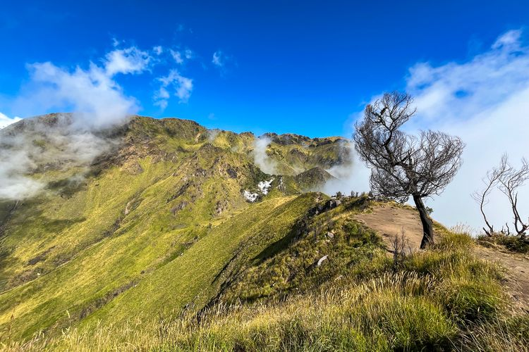
Fans
Fans
Fans
Fans

BBC News | 18 Januari 2026
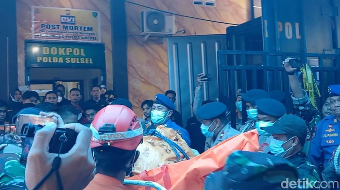
BBC News | 24 Jan 2026
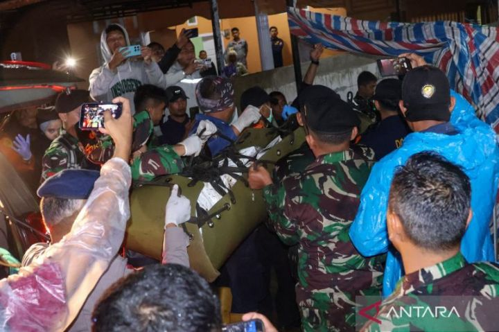
BBC News | 21 January 2026


Detikcom | 10 April 1815

Rublik Depok | Februari 2001
Radar kudus | 26 Agustus 1883
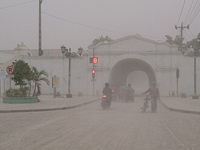
Wikipedia | 13 Februari 2014
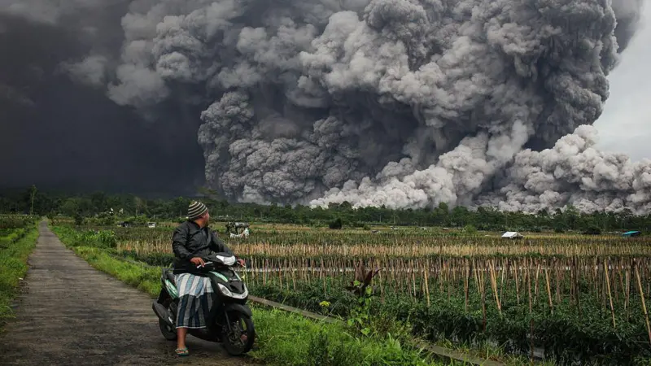

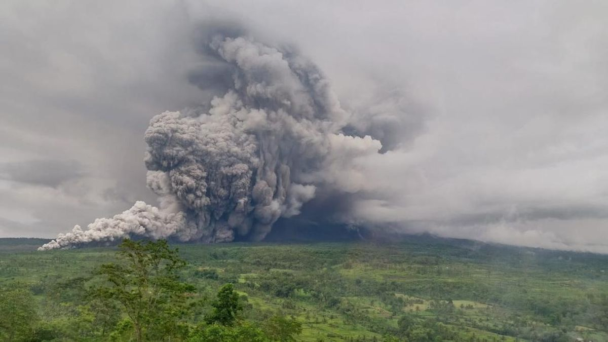